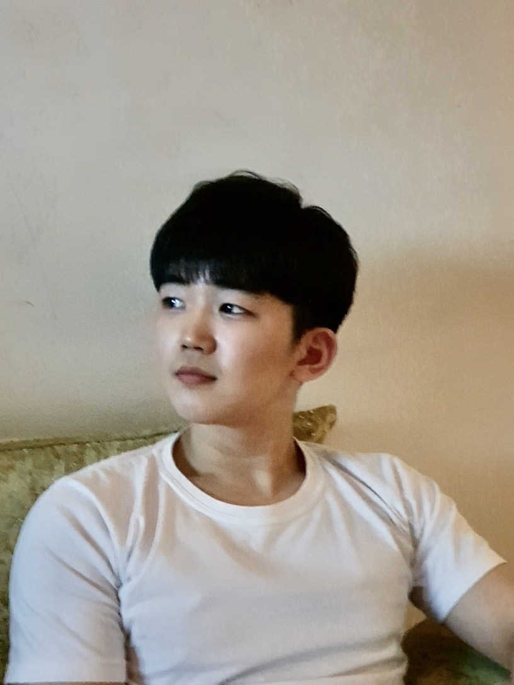

유치원 교사가 되고자 유아교육과로 진학했지만,
새로운 꿈이 생겨 여러분들과 함께 개발자가 되려고 합니다.
쉽지 않은 길인걸 점점 느껴가지만,
포기란 배추 셀 때나 쓰는 말인거 다들 아시죠??
인천에서 태어나고 자랐지만 성공에 대한 욕망과 서울에 대한 로망을 쫓고자 2020년 3월 서울로 이사오게 되었습니다.


작은 원룸이지만 남자 혼자 사는 집같지 않게 깔끔하게 꾸미다보니 스스로에게 아주 만족스런 집이 완성되었어요!
이렇게 행복한 기운을 주는 저의 집을 발판삼아 기어이 성공하리라 다짐했습니다.
그 때 제가 타고다닐 자동차입니다.
이름하여 Bently Continental GT!!